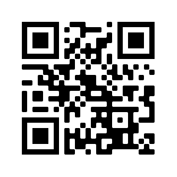

Практическая работа 2021.02.22 - 03.06

- Страница HTML, шапка, 3 колонки, <input>, <button> подвал
- Страница HTML, шапка, текст, подвал со ссылками (тег <a>), собираем картинку с шахматами из 4 частей
- Три HTML страницы online магазина: стартовая, "корзина", карточка товара
- Программы
- увеличивает/уменьшает прозрачность объекта двумя кнопками
- удаляет объекты элементы с экрана при наведении на него указателя мыши (hover)
- в произвольное место добавляет круг crap?
- в указанное место добавляет круг
- live clock in a div
- read <input> field and store in an array
- print array contents and let delete any element
- print random number in the center of the page
- add a small <img> every 5 seconds
- при клике отображает в центре экрана окно с текстом.
- скрывает окно при клике кнопки
- передвигает элемент по экрану кнопками w,s,a,d
- анимацию элемента(смена цвета), при клике на кнопке и останавливает при повторном ее нажатии.
- устанавливает через поля <input> размер контейнера (ширину и высоту)
- анимацию движения контейнера по диагонали экрана с использованием функции animate()
- меняет ширину контейнера при нажатии кнопок клавиатуры вправо и влево.
- через 2 секунды проверяет ввел ли пользователь свои имя в поле <input> и здоровается с ним.
- передвигает контейнер в указанное мышкой место.
- через 5 секунд загрузки страницы выводит окно с текстом.
- вращать контейнер при помощи стрелок клавиатуры.
- вращать контейнер при наведении на него мышкой
- a boxed number, when right-clicked increments
- 5x5 table, when a mouse hovers over a line, the line changes color to grey
- <input> element lets add values to a table
- обводит границы поля <input> красным, если пользователь не ввел данные
- on right-click на экране появляется окно с текстом в центре экрана
- Игра ГОНКИ
- Start page: <input> name, Controls: ←, ↑, →, ↓, "p" - pause; "Старт" <button>
- Game track
- "Game over"
исходное задание